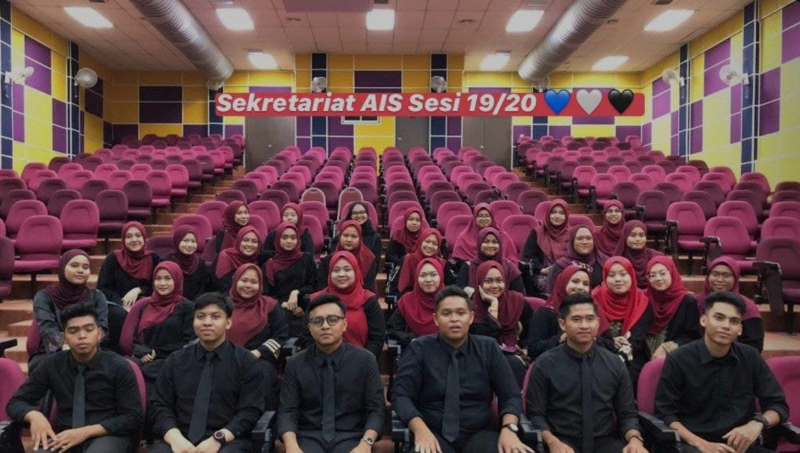

| Universiti Teknologi Mara Kelantan Branch | 2019-2022 |
| Sekolah Menengah Kebangsaan Sungai Soi | 2014-2018 |
| Sekolah Kebangsaan Cherok Paloh | 2010-2013 |
| Sekolah Kebangsaan Kempadang | 2008-2009 |
| Tadika Kemas Kempadang | 2007 |
Program "INDUKSI"

This is a picture of when I became the AIS secretariat and had just finished the "ANNUAL GENERAL MEETING" and "INDUKSI" programs
| I have some work experience and also used to be a secretariat at the AIS club as a student at Uitm I studied. Among the experiences I got while working in a restaurant and also catering was being able to make myself more patient in serving customers. In addition, I can be independent and have integrity when calculating sales revenue. I can also learn to be polite when talking to incoming customers.Then, my experience as an AIS secretariat was when I was given the responsibility to be a facilitator for other students during the "Induction" program. I also gained experience such as managing time more efficiently and carefully when making a decision. |